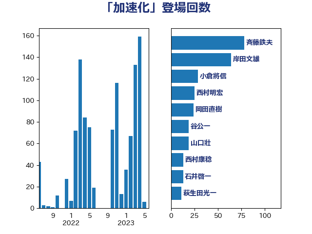

単語「加速化」

| 斉藤鉄夫 | 公明党 | 78 回 |
| 岸田文雄 | 自由民主党 | 64 回 |
| 小倉將信 | 自由民主党 | 29 回 |
| 西村明宏 | 自由民主党 | 25 回 |
| 岡田直樹 | 自由民主党 | 24 回 |
| 谷公一 | 自由民主党 | 19 回 |
| 山口壯 | 自由民主党 | 19 回 |
| 西村康稔 | 自由民主党 | 13 回 |
| 石井啓一 | 公明党 | 13 回 |
| 萩生田光一 | 自由民主党 | 11 回 |
| 林芳正 | 自由民主党 | 10 回 |
| 後藤茂之 | 自由民主党 | 10 回 |
| 野田聖子 | 自由民主党 | 9 回 |
| 塩田博昭 | 公明党 | 9 回 |
| 鈴木俊一 | 自由民主党 | 8 回 |
| 河西宏一 | 公明党 | 8 回 |
| 中川康洋 | 公明党 | 8 回 |
| 竹内真二 | 公明党 | 7 回 |
| 松本剛明 | 自由民主党 | 7 回 |
| 中川宏昌 | 公明党 | 7 回 |
| 高木陽介 | 公明党 | 6 回 |
| 若松謙維 | 公明党 | 6 回 |
| 秋葉賢也 | 自由民主党 | 6 回 |
| 小野泰輔 | 日本維新の会 | 6 回 |
| 宮崎雅夫 | 自由民主党 | 6 回 |
| 安江伸夫 | 公明党 | 6 回 |
| 加藤勝信 | 自由民主党 | 6 回 |
| 野村哲郎 | 自由民主党 | 5 回 |
| 谷合正明 | 公明党 | 5 回 |
| 西銘恒三郎 | 自由民主党 | 5 回 |
| 稲津久 | 公明党 | 5 回 |
| 石井正弘 | 自由民主党 | 5 回 |
| 永井学 | 自由民主党 | 5 回 |
| 山本博司 | 公明党 | 5 回 |
| 山本剛正 | 日本維新の会 | 5 回 |
| 山口那津男 | 公明党 | 5 回 |
| 宮崎勝 | 公明党 | 5 回 |
| 古屋範子 | 公明党 | 5 回 |
| 高橋光男 | 公明党 | 4 回 |
| 石原正敬 | 自由民主党 | 4 回 |
| 梅谷守 | 立憲民主党 | 4 回 |
| 早稲田ゆき | 立憲民主党 | 4 回 |
| 山井和則 | 立憲民主党 | 4 回 |
| 寺田稔 | 自由民主党 | 4 回 |
| 大口善徳 | 公明党 | 4 回 |
| 吉田宣弘 | 公明党 | 4 回 |
| 古川禎久 | 自由民主党 | 4 回 |
| 長谷川淳二 | 自由民主党 | 3 回 |
| 野上浩太郎 | 自由民主党 | 3 回 |
| 足立敏之 | 自由民主党 | 3 回 |
| 赤羽一嘉 | 公明党 | 3 回 |
| 西田昭二 | 自由民主党 | 3 回 |
| 西岡秀子 | 国民民主党 | 3 回 |
| 菅義偉 | 自由民主党 | 3 回 |
| 窪田哲也 | 公明党 | 3 回 |
| 石井浩郎 | 自由民主党 | 3 回 |
| 田所嘉徳 | 自由民主党 | 3 回 |
| 漆間譲司 | 日本維新の会 | 3 回 |
| 河野太郎 | 自由民主党 | 3 回 |
| 横山信一 | 公明党 | 3 回 |
| 川田龍平 | 立憲民主党 | 3 回 |
| 岡本三成 | 公明党 | 3 回 |
| 尾崎正直 | 自由民主党 | 3 回 |
| 小沼巧 | 立憲民主党 | 3 回 |
| 小森卓郎 | 自由民主党 | 3 回 |
| 小林鷹之 | 自由民主党 | 3 回 |
| 加田裕之 | 自由民主党 | 3 回 |
| 佐藤啓 | 自由民主党 | 3 回 |
| 中野洋昌 | 公明党 | 3 回 |
| 下野六太 | 公明党 | 3 回 |
| 上田勇 | 公明党 | 3 回 |
| 三上えり | 立憲民主党 | 3 回 |
| 鰐淵洋子 | 公明党 | 2 回 |
| 青柳仁士 | 日本維新の会 | 2 回 |
| 階猛 | 立憲民主党 | 2 回 |
| 長坂康正 | 自由民主党 | 2 回 |
| 金子恭之 | 自由民主党 | 2 回 |
| 進藤金日子 | 自由民主党 | 2 回 |
| 羽田次郎 | 立憲民主党 | 2 回 |
| 空本誠喜 | 日本維新の会 | 2 回 |
| 福田昭夫 | 立憲民主党 | 2 回 |
| 石橋通宏 | 立憲民主党 | 2 回 |
| 石垣のりこ | 立憲民主党 | 2 回 |
| 石井苗子 | 日本維新の会 | 2 回 |
| 矢倉克夫 | 公明党 | 2 回 |
| 甘利明 | 自由民主党 | 2 回 |
| 玉木雄一郎 | 国民民主党 | 2 回 |
| 猪瀬直樹 | 日本維新の会 | 2 回 |
| 牧原秀樹 | 自由民主党 | 2 回 |
| 滝沢求 | 自由民主党 | 2 回 |
| 渡辺猛之 | 自由民主党 | 2 回 |
| 渡辺博道 | 自由民主党 | 2 回 |
| 浜野喜史 | 国民民主党 | 2 回 |
| 池田佳隆 | 自由民主党 | 2 回 |
| 武部新 | 自由民主党 | 2 回 |
| 森田俊和 | 立憲民主党 | 2 回 |
| 梅村みずほ | 日本維新の会 | 2 回 |
| 松山政司 | 自由民主党 | 2 回 |
| 東国幹 | 自由民主党 | 2 回 |
| 本庄知史 | 立憲民主党 | 2 回 |
| 日下正喜 | 公明党 | 2 回 |
| 徳永エリ | 立憲民主党 | 2 回 |
| 庄子賢一 | 公明党 | 2 回 |
| 平山佐知子 | 無所属 | 2 回 |
| 岩本剛人 | 自由民主党 | 2 回 |
| 山本順三 | 自由民主党 | 2 回 |
| 山本佐知子 | 自由民主党 | 2 回 |
| 山崎誠 | 立憲民主党 | 2 回 |
| 山口晋 | 自由民主党 | 2 回 |
| 小林一大 | 自由民主党 | 2 回 |
| 大野泰正 | 自由民主党 | 2 回 |
| 国定勇人 | 自由民主党 | 2 回 |
| 吉田久美子 | 公明党 | 2 回 |
| 加藤鮎子 | 自由民主党 | 2 回 |
| 中野英幸 | 自由民主党 | 2 回 |
| 中根一幸 | 自由民主党 | 2 回 |
| 上杉謙太郎 | 自由民主党 | 2 回 |
| 麻生太郎 | 自由民主党 | 1 回 |
| 鳩山二郎 | 自由民主党 | 1 回 |
| 鬼木誠 | 立憲民主党 | 1 回 |
| 高橋千鶴子 | 日本共産党 | 1 回 |
| 高橋はるみ | 自由民主党 | 1 回 |
| 高木真理 | 立憲民主党 | 1 回 |
| 馬場成志 | 自由民主党 | 1 回 |
| 須藤元気 | 無所属 | 1 回 |
| 阿達雅志 | 自由民主党 | 1 回 |
| 長谷川英晴 | 自由民主党 | 1 回 |
| 長島昭久 | 自由民主党 | 1 回 |
| 鈴木貴子 | 自由民主党 | 1 回 |
| 鈴木淳司 | 自由民主党 | 1 回 |
| 鈴木敦 | 国民民主党 | 1 回 |
| 金子恵美 | 立憲民主党 | 1 回 |
| 金城泰邦 | 公明党 | 1 回 |
| 野田国義 | 立憲民主党 | 1 回 |
| 重徳和彦 | 立憲民主党 | 1 回 |
| 里見隆治 | 公明党 | 1 回 |
| 道下大樹 | 立憲民主党 | 1 回 |
| 輿水恵一 | 公明党 | 1 回 |
| 赤澤亮正 | 自由民主党 | 1 回 |
| 西田実仁 | 公明党 | 1 回 |
| 藤川政人 | 自由民主党 | 1 回 |
| 葉梨康弘 | 自由民主党 | 1 回 |
| 菅直人 | 立憲民主党 | 1 回 |
| 菅家一郎 | 自由民主党 | 1 回 |
| 茂木敏充 | 自由民主党 | 1 回 |
| 若宮健嗣 | 自由民主党 | 1 回 |
| 舩後靖彦 | れいわ新選組 | 1 回 |
| 舟山康江 | 国民民主党 | 1 回 |
| 自見はなこ | 自由民主党 | 1 回 |
| 細田健一 | 自由民主党 | 1 回 |
| 稲富修二 | 立憲民主党 | 1 回 |
| 福重隆浩 | 公明党 | 1 回 |
| 神谷政幸 | 自由民主党 | 1 回 |
| 神津たけし | 立憲民主党 | 1 回 |
| 盛山正仁 | 自由民主党 | 1 回 |
| 田村智子 | 日本共産党 | 1 回 |
| 田島麻衣子 | 立憲民主党 | 1 回 |
| 田名部匡代 | 立憲民主党 | 1 回 |
| 田中英之 | 自由民主党 | 1 回 |
| 牧島かれん | 自由民主党 | 1 回 |
| 湯原俊二 | 立憲民主党 | 1 回 |
| 渡辺創 | 立憲民主党 | 1 回 |
| 浜田靖一 | 自由民主党 | 1 回 |
| 津島淳 | 自由民主党 | 1 回 |
| 永岡桂子 | 自由民主党 | 1 回 |
| 比嘉奈津美 | 自由民主党 | 1 回 |
| 森まさこ | 自由民主党 | 1 回 |
| 梶原大介 | 自由民主党 | 1 回 |
| 梅村聡 | 日本維新の会 | 1 回 |
| 柳本顕 | 自由民主党 | 1 回 |
| 柳ヶ瀬裕文 | 日本維新の会 | 1 回 |
| 柘植芳文 | 自由民主党 | 1 回 |
| 東徹 | 日本維新の会 | 1 回 |
| 杉本和巳 | 日本維新の会 | 1 回 |
| 杉尾秀哉 | 立憲民主党 | 1 回 |
| 本田顕子 | 自由民主党 | 1 回 |
| 末松信介 | 自由民主党 | 1 回 |
| 新妻秀規 | 公明党 | 1 回 |
| 新垣邦男 | 立憲民主党 | 1 回 |
| 平木大作 | 公明党 | 1 回 |
| 山田美樹 | 自由民主党 | 1 回 |
| 山崎正恭 | 公明党 | 1 回 |
| 尾身朝子 | 自由民主党 | 1 回 |
| 小野田紀美 | 自由民主党 | 1 回 |
| 小熊慎司 | 立憲民主党 | 1 回 |
| 小寺裕雄 | 自由民主党 | 1 回 |
| 宮本徹 | 日本共産党 | 1 回 |
| 大家敏志 | 自由民主党 | 1 回 |
| 大串正樹 | 自由民主党 | 1 回 |
| 塩川鉄也 | 日本共産党 | 1 回 |
| 堤かなめ | 立憲民主党 | 1 回 |
| 堀場幸子 | 日本維新の会 | 1 回 |
| 堀内詔子 | 自由民主党 | 1 回 |
| 嘉田由紀子 | 無所属 | 1 回 |
| 吉田統彦 | 立憲民主党 | 1 回 |
| 吉井章 | 自由民主党 | 1 回 |
| 勝俣孝明 | 自由民主党 | 1 回 |
| 冨樫博之 | 自由民主党 | 1 回 |
| 佐藤英道 | 公明党 | 1 回 |
| 伊佐進一 | 公明党 | 1 回 |
| 今枝宗一郎 | 自由民主党 | 1 回 |
| 井野俊郎 | 自由民主党 | 1 回 |
| 井上哲士 | 日本共産党 | 1 回 |
| 井上信治 | 自由民主党 | 1 回 |
| 中谷元 | 自由民主党 | 1 回 |
| 中村裕之 | 自由民主党 | 1 回 |
| 中川郁子 | 自由民主党 | 1 回 |
| 上田英俊 | 自由民主党 | 1 回 |
| 上月良祐 | 自由民主党 | 1 回 |
| 三浦信祐 | 公明党 | 1 回 |
| こやり隆史 | 自由民主党 | 1 回 |